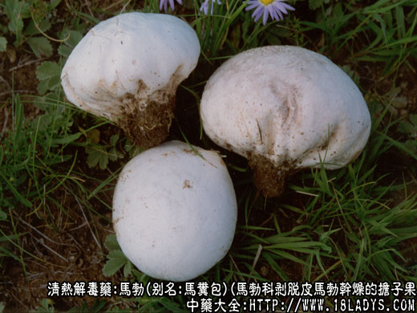
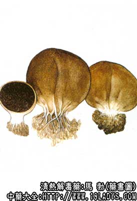

原文连接:https://www.daquan.com/post/2313.html



马勃为较常用中药。始载《名医别录》。
别名：马粪包。
来源：为低等植物担子菌类马勃科剥脱皮马勃，紫颓马勃干燥的担子果（子实体）。生于竹林、树林及田野湿地上。
产地：主产于内蒙古、河北、甘肃、陕西。江苏、湖北、广西等地。均为野生。
采收加工：担子果初生呈白色球形，在霉雨季节，生长很快，4～5日即可成熟可采集，夏秋季担子果刚成熟时采集，晒干即可。
性状鉴别：1、脱皮马勃：担子果扁球形或类圆形，直径5～18厘米或更大。包被灰棕色至黄褐色，纸质，常破碎呈块片或已全部脱落。除去外皮的马勃，呈黄棕色或棕褐色棉絮状。体轻泡，柔软，有弹性，细微捻动即有粉尘飞扬，有细腻柔软感。气味微弱。
2、紫颓马勃：担子果扁圆形或杯状，直径5～12厘米。基部有小柄，包被紫褐色，粗皱，有圆形凹陷，包被薄，外翻，上部包被已脱落，露出紫色絮状孢体。体轻泡，有弹性，用手捻之有大量的孢子飞扬。气味微弱。
以个大，饱满，松泡，有弹性者为佳。
主要成分：含马勃素、尿素、麦角甾醇、亮氨酸、酪氨酸，并含大量磷酸钠。
药理作用：清肺利咽，解热止血，与其收敛消炎作用有关。局部止血可能为机械性作用。
炮制：剥掉外皮，剪成小块。
性味：辛、平。
归经：入肺经。
功能：清肺热、散瘟解毒。
主治：瘟热毒壅，咽喉肿痛，颊面壅肿。外用治内伤出血。
临床应用：1、内服主治咽喉肿痛、咽喉肿痛（上呼吸道炎扁桃体炎、急性咽喉炎均可用之），配山豆根、玄参等，方如马豆汤，或用马勃3g、白矾1.5g，并研末吹治喉炎，同时，也可制丸服食治肺热久咳。
2、外用局部止血，治冻疮，以马勃块或马勃粉外敷。
用量：1.5～6g，内服须包煎，外用适量，用于止血须经高压蒸气消毒。
处方举例：1、马豆汤：马勃3g、山豆根9g、玄参9g、生甘草6g，水煎服。
2、马勃丸：马勃15g，为末，用蜜糖制丸如梧桐子大，每次服20丸，一日服三次，治肺热久咳不止，有一定效果。
注：马勃全国分布地区很广，品种较多，根据《中药鉴别手册》第一册记载有两科八种，除上述两个品种在全国销售较广，其余6种，均与上述两种有异，属于地方习用品，如：
1、灰包科：1、青海大马勃，形扁呈不规则的块状，外包被较厚硬而脆，黄棕色。内包被灰黄色纸质，孢体淡青褐色絮状。2、吉林、陕西、广东的大口静灰球，呈扁球形，直径3～7厘米，一端有短柄，孢子顶端开裂，开裂口比较大。
2、硬皮马勃科：1、河南、四川、湖北利川的光硬皮马勃。2、湖北、湖南、四川眉山的粗硬皮马勃。3、云南的豆包菌。这三种硬皮马勃科的品种，较正文所述的马勃区别较大，呈圆球形或类圆形不等，主要特征：个小，直径2～6厘米。皮厚，坚硬，有柄或无柄。破开后不成絮状。天津北京习用的绵软如絮者。